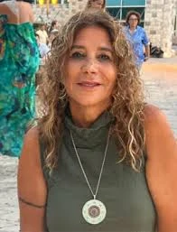

כפר עזה
איתמרי לילי ז"ל
אשת חינוך, תרבות, טיולים ושמחת חיים
סיפור חיים
לילי איתמרי ז״ל, בתם של שולה וראובן, נולדה בכ״ח בכסלו תש״כ, 29 בדצמבר 1959, בקריית אונו. היא הייתה אחות לרוני, רמי ודרור.
לילי גדלה והתחנכה בקריית אונו, למדה בבית הספר היסודי ״ניר״ ובהמשך בתיכון על שם יצחק בן צבי. מגיל צעיר הייתה חניכה פעילה בתנועת ״הנוער העובד והלומד״, והתנועה מילאה את עולמה. שם הדריכה, הפעילה חברים וחברות, וגילתה כבר אז את אהבתה הגדולה לחינוך, לאנשים ולעשייה.
לאחר לימודיה התגייסה לצה״ל ושירתה בנח״ל. מיד לאחר השירות הצבאי הגיעה לקיבוץ כפר עזה עם גרעין ״עלי ניר״, ושם בנתה את חייה. חברתה אמה סיפרה עליה: ״לילי בנתה את עצמה בעשר אצבעותיה ועשתה רק טוב. נערה, בחורה, אישה שהיא כולה לב.״
בכפר עזה פגשה לילי את רם איתמרי מקיבוץ רוחמה. האהבה ביניהם פרחה, ומאז לא נפרדו. חבריהם סיפרו על זוגיות מיוחדת, אהבה גדולה וחברות עמוקה ששררה ביניהם. השניים נישאו, קבעו את ביתם בכפר עזה, ובמהלך השנים נולדו להם שני ילדים: תומר ורז.
לילי הייתה אם מסורה ואוהבת לילדיה. חברתה אמה סיפרה כי לילי אהבה בכל נימי נפשה את תומר ואת רז, והייתה האמא הכי גאה שהכירה.
לילי הייתה אשת חינוך בכל רמ״ח איבריה. היא לימדה בבית הספר ״שער הנגב״, ובלטה במיוחד בתפקידה כרכזת חברתית. היא קיבלה באהבה ובחיוך מורים חדשים, תלמידים, חברים ואנשים שפגשו אותה בדרך. כרכזת חברתית פעלה רבות לטובת הנוער בדרום, ובמיוחד לטובת הנוער הבדואי.
לילי הייתה דמות מוכרת ואהובה בקיבוץ כפר עזה ובשער הנגב כולו. היא הייתה פעילה מאוד בהפקת פסטיבל ״דרום אדום״, שנערך מדי שנה בצפון הנגב בתקופת פריחת הכלניות, ובאירועים רבים נוספים. היא ארגנה אירועים ושווקים ב״שערוק״, השוק הכפרי בצומת כפר עזה, וכן את ערב ״בית השיטה״, מפגש בין חברי כפר עזה לחברי קיבוץ בית השיטה.
חברתה נחמה תיארה אותה כאישה שאינה יודעת מנוח, תמיד בעשייה, ממקום למקום כמו פרפר ברוח - פעם מארגנת את דרום אדום, פעם טיול בנות ליוון, ועוד אירועים שתמיד היו בקנה.
כשיצאה לגמלאות, הפכה לילי לרכזת התרבות של קיבוץ כפר עזה. במקביל החלה לעסוק בתחום אהוב נוסף - נסיעות לחו״ל. בקיבוץ כינו אותה בחיבה ״לילי טורס״. היא ארגנה טיולים ברחבי העולם לקבוצות נשים, מורות וחברות, וכל מי שביקש עצה או טיפ קיבל ממנה בשמחה ובנדיבות.
יוון הייתה אהבה גדולה במיוחד עבורה, והיא הוציאה והדריכה טיולי נשים מאורגנים לשם. לילי אהבה לטייל, ליהנות, לארח, לבשל, ליצור חוויות ולחיות את החיים בצבעים מלאים.
רז, בתה, כתבה כי לאימה היה משפט שאמרה תמיד: ״חיים פעם אחת, ומחר אני יכולה למות, אז אני מנסה ליהנות כמה שרק אני יכולה.״ כך חיה לילי - בעשייה, בשמחה, בתנועה ובאהבת חיים.
תומר, בנה, כתב לה: ״את היית האור המכוון שלי בעולם הזה. בכל מה שעסקת תמיד היית עם חיוך רחב מאוזן לאוזן שלא ניתן היה למחוק, תמיד היית מהראשונות להתנדב למשימות בקיבוץ כי אחרים צריכים לנוח ולא לעבוד קשה.״
לילי הייתה אישה רבת פעלים ומלאת שמחת חיים, שהשרתה אווירה טובה על כל סביבתה. היא אהבה לארח, וריח הבישולים שלה התפשט ברחבי השכונה. בכל מקום שאליו הגיעה הביאה צבע, חום, חיוך ותנועה.
שבעה באוקטובר והימים שאחריו בבוקר שבת, שמחת תורה תשפ״ד, 7 באוקטובר 2023, חדרו מחבלים לקיבוץ כפר עזה במסגרת מתקפת הטרור הרצחנית על יישובי עוטף עזה.
לקיבוץ חדרו מחבלים רבים מכמה פרצות בגדר. באותו יום נרצחו בכפר עזה עשרות חברים, ואחרים נחטפו לרצועת עזה. בין הנרצחים היו לילי ורם איתמרי.
עם תחילת המתקפה נכנסו רם ולילי לממ״ד. הם הספיקו לספר לבני משפחתם שמחבלים נכנסו לביתם, ואז נותק עמם הקשר. במשך ימים הוגדרו נעדרים, עד שמשפחתם קיבלה את הבשורה הקשה.
לילי איתמרי נרצחה בביתה בכפר עזה בכ״ב בתשרי תשפ״ד, 7 באוקטובר 2023. בת 63 הייתה במותה. היא הובאה למנוחות בבית העלמין המקומי בקיבוץ רוחמה, ונטמנה לצד בעלה רם.
על מצבתה כתבו אוהביה: ״בשלל צבעי הקשת צבעת את חיינו. העשייה ושמחת החיים הייתה נר לרגלייך. נמשיך בדרכך. לנצח תהיי בליבנו.״
זיכרון ומילים מהלב רז, בתה של לילי, כתבה: ״היית אמא מדהימה, אני יכולה שעות לדבר עלייך אבל אף אחד לא יבין. אני לא מצליחה לעכל את זה שלא תלוו אותי בחופה שלי.״
תומר, בנה, סיפר כי הוריו היו דמויות להערצה, וכי המילים לעולם לא יספיקו כדי לתאר אותם. הוא סיפר על רגעי החרדה באותו יום, על ההתכתבויות עם הוריו מתוך הממ״ד, ועל חוסר האונים כאשר הבין שהמחבלים הגיעו לביתם.
תומר אמר כי אם היה שואל את הוריו מה הם היו רוצים היום, התשובה הייתה פשוט להיות יחד - משפחה, חברים, לחבק, לעזור, ולעשות את מה שעושה טוב.
חברתה איריס כתבה: ״לילי אהובה, אני אזכור אותך מחייכת, מטיילת בעולם עם חיוך עצום בשדה כלניות.״
חברתה נחמה כתבה: ״שום דבר לא הכין אותנו לפרידה הנוראה הזו. הקמת בכפר עזה בית לתפארת עם בן זוגך. חברה, אישה, בת, אם, אחות ומחנכת מדהימה, את חסרה.״
שרית, חברתה, כתבה: ״את חברתי הטובה ותישארי לעד נצורה בליבי. מלח הארץ, תמיד למען כולם. תמיד אזכור את החיוך המרגיע הטוב שיחסר לנו לכולם. תשמרי את ורם היקר עלינו מלמעלה.״
לזכרם של לילי ורם יזמה עמותת מטב, שבה עבד רם, מבצע חלוקת חבילות מזון לאזרחים ותיקים מאזור הדרום.
לילי נזכרת כאישה של צבע, שמחה, חינוך, תרבות ונתינה. אם, רעיה, בת, אחות, חברה ומחנכת; אישה שהפכה כל מפגש לחם יותר, כל אירוע לשמח יותר, וכל דרך לצבעונית יותר.